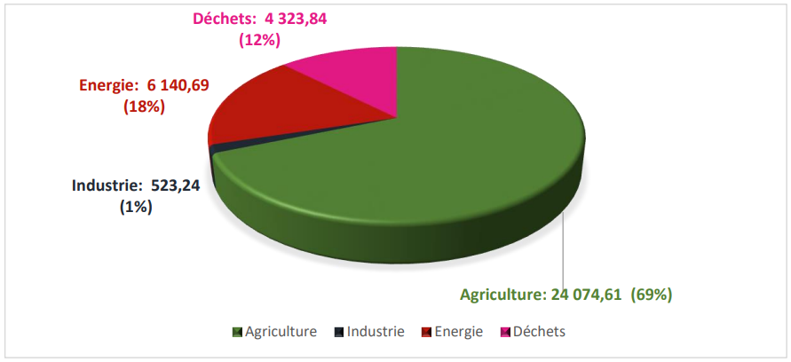
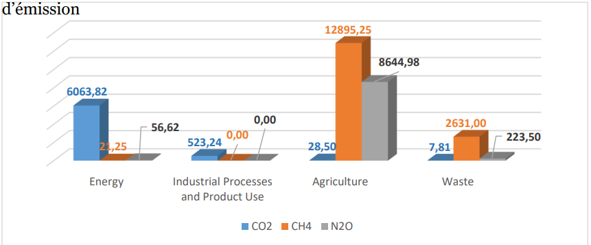
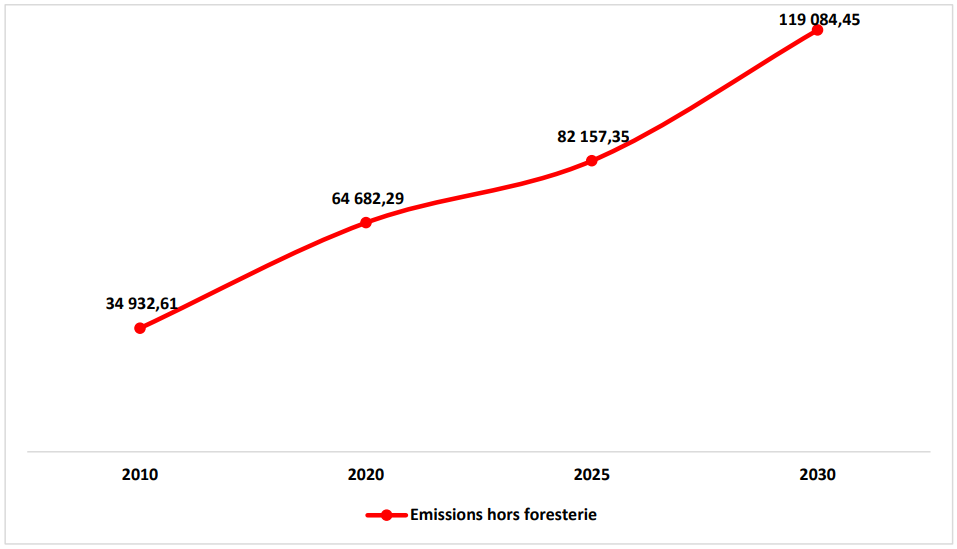
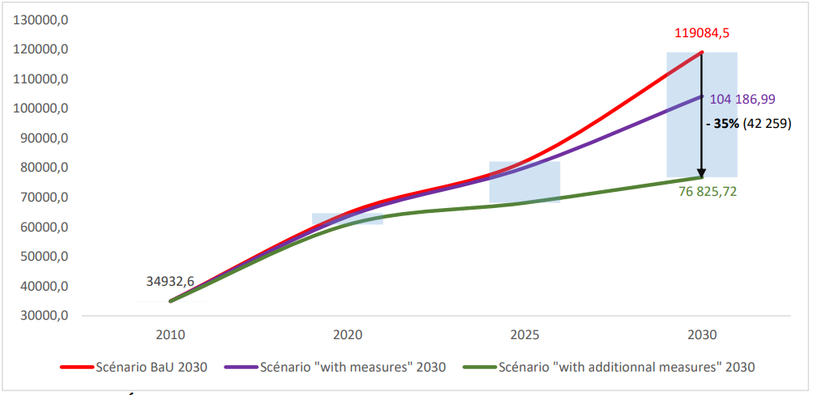
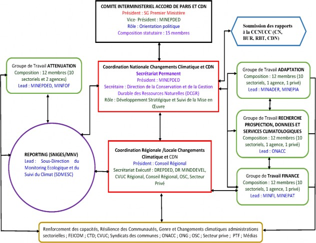

Republic of Cameroon NDC Revised 2021
REPUBLIC OF CAMEROON
Peace-Work-Fatherland
NATIONALLY DETERMINED CONTRIBUTION - UPDATED (NDC)
NATIONALLY DETERMINED CONTRIBUTION - UPDATED (NDC)
September 2021
|
°C |
Celsius |
|
APRUE |
Agency for the Promotion and Rationalization of Energy Use |
|
BaU |
Business as Usual |
|
BRT |
Rapid Transit Bus |
|
BUR |
Biennial Update Report |
|
CC |
Climate Change |
|
UNFCCC |
United Nations Framework Convention on Climate Change |
|
CDN |
Nationally Determined Contribution |
|
CH4 |
Methane |
|
CMA |
Conference of the Parties Serving as the meeting of the Parties to the Paris Agreement |
|
CN |
National Communication |
|
CNCC |
National Committee on Climate Change |
|
CO2 |
Carbon Dioxide |
|
COP |
Conference of the Parties |
|
INDC |
Intended Nationally Determined Contribution |
|
CTD |
Decentralized Territorial Collectivity |
|
CVUC |
United Communes and Cities of Cameroon |
|
DFnP |
Non-Permanent Forest Domain |
|
DFP |
Permanent Forest Domain |
|
DSPL |
Poverty Reduction Strategy Statement |
|
EE |
Energy Efficiency |
|
REC |
Renewable Energy |
|
FAO |
Food and Agriculture Organization of the United Nations |
|
FCFA |
Francs of the African Financial Community |
|
FEICOM |
Special Fund for Intermunicipal Equipment and Intervention |
|
GHG |
Greenhouse Gases |
|
GgEqCO2 |
Giga gram CO2 Equivalent |
|
IPCC |
Intergovernmental Group of Experts on Climate Change |
|
GW |
Giga Watts |
|
Ha |
Hectare |
|
HFCs |
Hydrofluorocarbon |
|
IGES |
Greenhouse Gas Inventory |
|
Km |
Kilometer |
|
kW |
Kilowatt |
|
LEDs |
LED (Light Emitting Diode) |
|
MINAC |
Ministry of Arts and Culture |
|
MINAS |
Ministry of Social Affairs |
|
MINAT |
Ministry of Territorial Administration |
|
MINCOMMERCE |
Ministry of Trade |
|
MINDCAF |
Ministry of Cadastre and Land Affairs |
|
MINDDEVEL |
Ministry of Decentralization and Local Development |
|
MINDEF |
Ministry of Defense |
|
MINEDUB |
Ministry of Basic Education |
|
MINEFOP |
Ministry of Employment and Vocational Training |
|
MINEPAT |
Ministry of Economy, Planning and Regional Development |
|
MINEPDED |
Ministry of the Environment, Nature Protection and Sustainable Development |
|
MINESEC |
Ministry of Secondary Education |
|
MINESUP |
Ministry of Higher Education |
|
MINFI |
Ministry of Finance |
|
MINFOPRA |
Ministry of Civil Service and Administrative Reform |
|
MINHDU |
Ministry of Housing and Urban Development |
|
MINJEC |
Ministry of Youth and Civic Education |
|
MINJUSTICE |
Ministry of Justice |
|
MINMAP |
Ministry of Public Procurement |
|
MINMIDT |
Ministry of Mines, Industry and Technological Development |
|
MINPMEESA |
Ministry of Small and Medium Enterprises, Social Economy and Handicrafts |
|
MINPOSTEL |
Ministry of Posts and Telecommunications |
|
MINPROFF |
Ministry for the Promotion of Women and the Family |
|
MINRESI |
Ministry of Scientific Research and Innovation |
|
MINREX |
Ministry of Foreign Relations |
|
MINSEP |
Ministry of Sports and Physical Education |
|
MINTSS |
Ministry of Labor and Social Security |
|
MRV |
Measurement, Notification, Verification |
|
MRV |
Monitoring, Reporting, Verification |
|
MW |
Mega Watt |
|
N2O |
Nitrous Oxide |
|
NDC |
Nationally Determined Contribution |
|
ODD |
Sustainable Development Goals |
|
ONACC |
National Observatory on Climate Change |
|
NGO |
Non-Governmental Organization |
|
CSO |
Civil Society Organization |
|
PCD |
Communal Development Plan |
|
GDP |
Gross Domestic Product |
|
PIUP |
Industrial Processes and Product Use |
|
PM |
Prime Minister |
|
PNACC |
National Climate Change Adaptation Program |
|
PV |
Photo Voltaic |
|
RBT |
Biennial Transparency Report |
|
SDN30 |
National Development Strategy for 2030 |
|
SNIGES |
National Greenhouse Gas Inventory System |
|
SPAND |
National Biodiversity Strategy and Action Plan |
|
TCN |
Third National Communication |
|
ToC |
Theory of Change |
|
UP |
Production Unit |
|
USD |
US Dollar |
|
ZAE |
Agroecological Zone |
|
Summary of the elements of understanding of the CDN 2021 |
|
|
Type of commitment |
GHG reduction by conditional and unconditional scenario |
|
Scope and GHGs covered |
All of France CO2, CH4, N2O, HFCs, PFCs and SF6 With the first 3 as main targets |
|
Period covered |
2020 - 2030 |
|
Reference year (base year) |
2010 |
|
Level of commitment or reduction of GHG emissions |
The level of GHG reduction by 2030 is 35% distributed as follows:
|
|
Priority sectors covered |
|
|
Global Warming Potential (GWP) |
|
|
Emissions estimation methodologies |
|
|
Implementation cost |
|
Cameroon submitted its INDC to the UNFCCC Secretariat in October 2015 and ratified the Paris Agreement in January 2016. In fact, this document is considered Cameroon's first NDC, outlining emission reduction targets of Greenhouse Gas (GHG) accompanied by proposals for adaptation measures.
Through this document, the Government of Cameroon presents an update of its first Nationally Determined Contribution (mitigation and adaptation), for the period 2020 - 2030 and in accordance with Articles 4.2, 4.9 and 4.11 of the Paris and other relevant provisions of the Agreement.
The content of this submission builds on the review of progress made under the first NDC, new policies such as SND30, national and sector plans, and reflects subsequent work regarding the development of quantifiable mitigation and adaptation goals. This document represents a robust synthesis qualified by detailed and relevant assessments of mitigation measures and adaptation measures. These assessments are complemented and supported by in-depth analysis, contextualized information and data, an inclusive stakeholder consultation process, targeting increased climate ambition.
Through the revision of its NDC, Cameroon intends to reduce the carbon footprint of its development by 35% by 2030, with 2010 as the reference year, without slowing down its growth, while favoring options for mitigation with high co-benefits, by strengthening the country's resilience to climate change, and by aligning its sectoral policies, including strengthening its mechanism and implementation tools, in order to facilitate the achievement of these objectives .
Cameroon within the Congo Basin includes ecosystems representative of the African continent, which qualifies it as Africa in miniature. The territory covers an area of 475,650 km2, and it stretches over 1,500 km from South to North (2-13°N) and 800 km from West to East (9-16°E). , and a growth rate
annual demographic of 2.5%. This rate reaches 4.3% in cities. Anarchic urbanization is one of the most remarkable phenomena of recent years. Thus the rate of urbanization increased from 52% in 2010 to 57% in 2019. 50% of the Cameroonian population lives in precarious, often illegal, neighborhoods.
In terms of climate, its wide extension in latitude means that it has gone from a monomodal rainfall deficit in the Sahelian agro-ecological zone (ZAE) (500 to 800 mm) to a monomodal rainfall (1800 to 2800 mm) in the high savannah ZAE and high plateaus, relatively abundant bimodal rainfall (1500 – 2000 mm) in the forest ZAE and significant monomodal rainfall (3000 – 8000 mm) in the coastal ZAE. The temperature itself varies from one environment to another and is between 20°C and 35°C with a thermal amplitude ranging from 3°C to more than 12°C
Biologically, Cameroon has six (06) main types of ecosystems, with a great diversity of agro-pastoral production systems. The flora is dominated by the steppe and the Yaérés in the Far North, the savannah in the North, the Adamaoua and the western highlands, the semi-deciduous forests in the Center - South, then the evergreen forests and mangroves in the coastal zone. Cameroon ranks fourth in terms of flora richness and fifth in terms of faunal diversity in Africa with 8300 species of plants, 335 species of mammals (SPANB II, 2012).
Furthermore, this flora and fauna heritage is subject to multiple threats, among the most important are illegal and anarchic logging, wildlife and mining, the uncontrolled use of land for agriculture slash-and-burn and the unsustainable development of agro-industries). The net annual rate of deforestation estimated at 0.6% (FAO, 2020) coupled with a low rate of reforestation (0.1%) suggests a growing decrease in biological diversity.
The contribution of deforestation to climate change and to the vulnerability of local and indigenous populations is undeniable. Cameroon has a large forest massif which is increasingly degraded by agro-pastoral activities as well as the mining and structuring projects to which
Added to this is significant population growth. Indeed, the Cameroonian population in 2021 is estimated at around 27 million inhabitants with an average density of 56 inhabitants/km2, which however varies from 7 to 200 inhabitants/km2 depending on the regions of the country.
This disparate density is a major determinant of the degradation of arable land and forest landscapes, which is strongly marked in the northern part and the western highlands. However, the majority of the rural population of Cameroon is dependent on the means of subsistence of agricultural and pastoral activities in a context where the productivity of the landscapes and land is less and less good, with a risk of intensification of the rural exodus. .
The problem of the degradation of forest landscapes is real throughout the country, but very varied from one agro-ecological zone to another. From a perspective of strong sustainability, the renewal of forest resources and the reconstitution of degraded plant formations are probably among the major current challenges that Cameroon is called upon to face in the coming decades, with the amplification of environmental upheavals and changes climate.
The challenges inherent in these concern deforestation, the increase in the erosive potential of waterways and the increase in floods and landslides which induce a new dynamic in the landscape with the acceleration of geomorphological processes . Consequently, this results in significant environmental risks.
Drought remains discreet and omnipresent in the northern part of the country. It is a constraining factor for populations and a trigger - amplifier of diseases that expose more than 3,000,000 souls (Cameroon Vulnerability Study, 2021).
The seasonal and almost uninterrupted frequency for two decades of extreme climatic events, the instability of the duration of the rainy seasons, the recent floods, the recurrent droughts to which Cameroon is increasingly exposed, prove that climate change have ceased to be a purely scientific question and have become a real and pressing problem for our society, requiring urgent measures for the safeguarding and protection of human life.
In economic terms, it is important to note that Cameroon's economy is one of the most diversified in Africa. Although the secondary (22% of GDP) and tertiary (45%) sectors are well developed, the economy is nevertheless mainly based on production sectors: agriculture, livestock, fishing and aquaculture, forestry and forestry. Agriculture employs nearly 60% of the population and remains the predominant sector of the national economy both in terms of its contribution to GDP (23%) and the knock-on effects on other sectors of activity. The main cash crops are cocoa, coffee, tobacco, cotton, bananas and pepper.
The contribution of the mining sector to GDP remains negligible despite significant potential identified and exploited. Cameroon has at least 52 types of mineral resources and the strategy is based on the development of at least 30% of these resources. Mining activities concern exploration, exploitation and transformation.
The industrial sector accounts for almost a third of GDP. He mainly produces for the local market.
|
Continent |
|
|
Sub-Region |
|
|
Contact details |
2° - 13° North latitude, 9° - 16° East longitude |
|
Area |
|
|
Ribs |
400km |
|
Borders |
Central Africa 822 km (East), Chad 1,122 km (East and North-East), Republic of Congo 520 km (South-East), Equatorial Guinea 183 km (South), Gabon 298 km (South), Nigeria 1,720 km (West and North-West) |
|
Maximum altitude |
4,095 m (Mount Cameroon) |
|
Minimum altitude |
0 m (Atlantic Ocean) |
|
Longest river |
Sanaga (900 km) |
|
Largest body of water |
First of all, it should be noted that the climate constraint is already exerting increased pressure on the main sectors supplying the national budget, it is increasing social vulnerabilities and contributing to degrading the infrastructure necessary for economic activity. Furthermore, the fight against the effects of climate change reveals, both for adaptation and for mitigation, the need for additional financial resources in addition to those necessary for the already known imperatives of development. To succeed in the transformational change towards a low-carbon economy, substantial investments are needed for the implementation of appropriate technologies, targeting all the sectors at stake. The necessary funding will support the implementation of programs and projects in line with the commitments made, respecting a distribution taking into account the most emitting sectors and the most vulnerable agro-ecological zones.
To this end, Cameroon's National Development Strategy 2020-2030 must absolutely be put into perspective within the framework of the revision of this NDC. The reason is simple, the country is considering a profound structural transformation of its economy, the growth of which must be close to double digits.
This requires an industrialization strategy based on increased processing of natural resources and a gradual reduction in imports in favor of exports of manufactured or semi-finished products. This ambition primarily concerns the market of the Economic Community of Central African States (ECCAS), estimated at around 300 million inhabitants. The foreseeable consequence of this strategic orientation in the case of business as usual is unprecedented pressure on soil, water and biomass resources, both in terms of withdrawals and degradation due to pollution and more particularly to emissions from greenhouse gases.
To reconcile its legitimate ambitions for economic growth with the imperatives of combating global warming and fulfilling its commitments made within the framework of its NDC, the Government has devoted one of the overall objectives of SND30 to the fight against climate change: "Strengthen climate change adaptation and mitigation measures and management
environmental to ensure economic growth and sustainable and inclusive social development”.
Thus, with regard to the energy sector, the country intends to pursue its policy of developing an energy mix based on hydroelectric, photovoltaic, thermal gas and energy from biomass. For the rural sector, the Government has opted for an intensification policy promoting the most innovative technologies, climate-resilient in particular. With regard to waste, the implementation of a national waste strategy is planned in the wake of the promotion of corporate social responsibility.
Like other Central African countries located around the Gulf of Guinea, Cameroon has significant offshore and onshore oil deposits, most of which have yet to be discovered. It plans to step up its prospecting efforts to increase its reserves and increase its oil and gas production by focusing on the new onshore basins in the northern part of the country, in particular (P . 45). 1 The exploitation of certain basins has been postponed due to the fall in the price of a barrel of oil. In order to keep its commitments made within the framework of its NDC, Cameroon must absolutely attract investors to explore and develop structuring projects relating to hydroelectricity, gas and other clean energies such as hydrogen and ammonia.
With regard to the forestry sub-sector, the forests of the Congo Basin, of which about 12% of the area is in Cameroon, have a vital role in regulating GHGs and carbon dioxide. , this in addition to playing a decisive role in the regulation of the regional climate and the water cycle. For this forest massif to continue to play this essential role for humanity, the international community must immediately redeploy, with more determination and method, the various instruments capable of contributing effectively to mitigation and adaptation efforts. More than some countries in the sub-region, the support Cameroon needs to meet its commitments made under its NDC is decisive.
While the growth rate of the continent's urban population was 5.4% in 2015, Central Africa had a rate of 6.2%. These figures imply at least two challenges: the first is food security for an urban population whose food needs are growing rapidly. In its role as the undisputed granary of Central Africa, Cameroon exerts more than the other countries of the Sub-region a strong pressure on its natural resources and its biomass to continue to satisfy the growing demand for food on its internal market but also those of neighboring countries.
With regard to the solid mining sub-sector, with the recent creation of SONAMINES, one could read the Government's desire to finally develop this sub-sector. 2 The iron ore consists mainly of the Nkout deposit estimated at 2 billion tons expandable to 4 billion on the one hand and the iron basin of Mbalam whose annual production capacity would be 40 million tons over 12 years in its first phase of development. The country's rutile reserves are estimated at 3 million tonnes, the second largest in the world after Sierra Leone. With regard to alumina ore, the fifth of the bauxite plateaus explored in 2020 by "Canyon Resources" has reserves estimated at 892 million tonnes, including 250 million at very high aluminum content.
If the country were to implement these major mining projects without further ado, the consequences on the environment, despite the usual measures to mitigate the impacts, would be considerable. It should be noted that more than 70% of the country's mineral reserves are located in the forest domain. Cameroon's technical and financial partners should support it so that substantial resources are mobilized to put in place logging techniques that are the least detrimental to the balance of forests.
Two other challenges exacerbate Cameroon's vulnerabilities. In terms of physical environments, the critical situation of the northern regions of the country in the face of climate change must be noted. This results in recurrent droughts and various extreme climatic phenomena. Thus, in the Far North region alone, which suffers from a grain deficit of 30,000 tons, the food insecurity rate is 33.6%. The presence of refugees (57,000) and displaced persons (223,642) also exerts strong pressure on natural resources such as water points and pastures (SNADDT, Diagnosis 2018). The socio-economic implications of these vulnerabilities are manifold. To respond to the induced economic crises, the State logically devotes most of its modest financial resources to social problems related to health, food security and post-disaster emergency situations.
As long as the resilience of the Sudano-Sahelian regions of the country and to a lesser extent that of the West and North-West regions is not significantly improved, the State's own resources necessary to address the challenges related to the climate change will not be able to respond to the challenges at hand.
At the security level, it is known that Cameroon faces instability in two agro-ecological zones most exposed to the effects of climate change, the Far North region plagued by attacks from the Boko Haram sect and the North-West and South-West regions shaken by the exactions of English-speaking separatists. The financial resources mobilized by the State to restore peace in these regions where instability tends to become endemic have largely contributed to eroding the resilience of the country's economy. The current health crisis has accentuated the weakening of an economy already destabilized by the combined effects of climate change and security crises. Without very strong political will and international support commensurate with the challenges analyzed above, the country's commitments made under its NDC may not be kept.
In view of the table presented above, the country therefore plans to mobilize all the relevant substantial means for this purpose: financing, technology transfer and capacity building to meet its international commitments and achieve its socio-economic development objectives.
Cameroon's vision in its strategy for an inclusive response to the impacts of climate change is summed up in the slogan: "transforming climate constraints into development opportunities".
In the context of adaptation, Cameroon's vision according to its National Plan for Adaptation to Climate Change (PNACC) stipulates that in 2035, "climate change in the five agro-ecological zones of Cameroon are completely integrated into the sustainable development of the country, thus reducing its vulnerability, and even transforming the problem of climate change into a development solution/opportunity. Cameroonians, particularly women, children and vulnerable people, and the country's economic sectors are thus acquiring greater resilience and a greater capacity to adapt to the negative impacts of climate change".
This vision is based on the theory of inverse determinism, which consists in admitting that positive structural socio-economic transformations can be triggered by the concerted concern to overcome the constraints of the physical environment. Climate change can therefore constitute a real opportunity to capitalize on in favor of the transition to a green economy, the fight against poverty, but beyond that, to strengthen the social cement through the game of social solidarity necessary for the reduction of vulnerabilities. differentials.
To reconcile its legitimate ambitions for economic growth with the imperatives of reversing the negative effects of climate change and honoring the commitments made under its NDC, the Government has devoted one of the overall objectives of SND30 to combating against climate change: "Strengthen climate change adaptation and mitigation measures and environmental management to ensure sustainable and inclusive economic growth and social development".
By considering both mitigation and adaptation objectives, the policies and related regulatory tools for implementation require both adaptations, reinforcements and new creations. These policies must as far as possible take into account the climatic constraint in the design and development of development policies in general.
4.1 National greenhouse gas emissions
In 2010, the agricultural sector remained the most important source of GHG emissions with 24074.61 Gg CO2eq or 69% of total emissions (Fig.1). The Energy sector in second position, presents 18% of emissions, followed by the waste sector with 12%. The Industrial Processes and Product Use (PIUP) sector comes last with 1%. (TCN IGES National Report, 2020).

Figure 2 illustrates the different greenhouse gases (GHGs) by source sector

4.2 Business As Usual (BAU) Scenario
For Cameroon, in a Business As Usual (BAU) scenario, GHG emissions reach 119,085 Gg Eq CO2 in 2030, an increase of 71% compared to 2010 base year when emissions are order of 34,933 Gg Eq CO2 (Fig.3).

4.3 Scope and coverage of mitigation actions
In the CDN scenario with measures taken into account, the increase in emissions is limited to 104,187 Gg CO2 Eq in 2030, i.e. an increase of 66% compared to 2010 (34,933 Gg CO2 Eq) and a reduction of 12% compared to the BAU scenario.
In this same scenario, but this time with additional measures, the increase in emissions is contained to 76,826 Gg Eq CO2 in 2030, an increase of 55% compared to 2010 and a reduction of 35% compared to the scenario BAU which represents in absolute value 42,259 Gg Eq CO2 of reduction (Fig.4).

The reduction shares of each sector in 2030 are presented in the table below:
Table 1: Share of reduction by sector in 2030
|
Share of reduction by sector in 2030 |
|||||
|
Sectors |
Agriculture |
FAT |
Energy |
Waste |
Totals |
|
Reduction in quantity (Gg Eq CO2) |
6808.48 |
19378.63 |
13369.85 |
2701.78 |
42258.73 |
|
Share of each sector in the total reduction (%). |
16.1% |
45.9% |
31.6% |
6.4% |
100.0% |
|
Share of each sector in percentage reduction (%). |
5.7% |
16.3% |
11.2% |
2.3% |
35.5% |
In terms of reduction potential, the forestry sector comes first, followed by Energy
4.4 Selected mitigation actions
Cameroon intends to implement the mitigation actions below, based on the guidelines and reduction options in line with the pillars of its national development strategy 2020-2030 (SND30) and the SDGs.
|
Agriculture/Fisheries/Livestock/Forest
|
||
|
Orientations in relation to SND 30 |
Retained mitigation actions |
Selected reduction options |
|
1) Coherence of planning and development of rural space to develop agriculture while limiting deforestation/degradation |
-Sustainable development of rural and urban spaces; - Strengthening the sustainable management and enhancement of forests and biodiversity, in particular through spatial land monitoring; -Rehabilitation of degraded lands and reforestation of anthropogenic savannahs, and enhancement of carbon sinks in degraded forests. |
|
|
2) Intensification of agricultural, animal and fish production that respects the environment and makes it possible to limit deforestation / degradation |
|
Reduction of CH4 from rice crops |
|
3) Promotion of practices to improve agricultural production capacities and enhance local resources |
|
|
|
Energy/Waste
|
||
|
Orientations in relation to SND 30 |
Retained mitigation actions |
Selected reduction options |
|
4) Controlling the energy consumption of systems through a proactive energy efficiency policy |
|
|
|
5) Efficient recovery of resources to move towards a circular economy |
|
|
|
6) Development of energy production from renewable sources |
|
|
4.4 Information on mitigation efforts
The unconditional mitigation measures scenario includes reduction options to which Cameroon commits as part of its Nationally Determined Contribution (NDC) taking into account its national context and internal capacities. The unconditional objective translates, in absolute terms for 2030, into emissions of 104,187 Gg Eq. CO2. The set of unconditional measures, at a cost of around 25,784.66 million USD, reduce projected emissions for the year 2030 by 14,898 Gg Eq. CO2, i.e. 12% of emissions in the BAU 2030 scenario.
Cameroon's revised NDC presents an overall mitigation target of 35% with 32 reduction options in the target sectors (unconditional and conditional measures) by 2030 compared to the reference scenario (BAU 2030). This new reduction target indicates the country's desire to revise its mitigation ambition upwards compared to the first version of the NDC (target of 32% reduction). It translates, in absolute terms for 2030, into reduced emissions of 14,898 Gg Eq CO2 (unconditional) and a surplus reduction of 27,361 Gg Eq C02 (conditional) if Cameroon receives the necessary support for implementation. additional measures proposed.
|
1. Quantified information on the benchmark, including a base year where applicable |
||
|
Contribution type |
An emissions reduction target with mitigation and adaptation actions |
|
|
Long-term national goal on GHG emissions |
Reduction of GHG emissions by 35% compared to a reference scenario for the target year 2030 and broken down into 12% unconditional and 23% conditional on support from the international community in the form of financing, actions capacity building and technology transfer. |
|
|
Target year |
2030 |
|
|
Reference year |
2010 |
|
|
Objective National Development Strategy 2020-2030 |
Economic growth and structural transformation (raise the annual growth rate from 4.5% to 8.1% on average over the period 202-2030; reduce the trade balance deficit from 8.8% of GDP in 2018 3% in 2030); reduction of poverty and underemployment (reducing the poverty rate from 37.5% in 2014 to less than 25% in 2030); environmental preservation and control of climate risks (strengthen actions for the sustainable management of natural resources, strengthen measures to adapt to and mitigate the effects of climate change and environmental management to guarantee economic growth and sustainable and inclusive development ); strengthening of governance (strengthening the performance of public action with a view to achieving development objectives). |
|
|
Main sector objectives |
CDN scenario: (i) greening (intensification, sedentarization) of agricultural policy; (ii) sustainable forest management (iii) increased energy supply and improved energy efficiency; (iv) 25% renewable energy in the electricity mix by 2035. |
|
|
Ambition of the Contribution |
Cameroon's emissions reduction target represents a significant effort for a country whose emissions remain insignificant internationally and whose GDP per capita ranks 99th in the world and 16th in Africa (2020, World Bank). World). |
|
|
Fairness of Contribution |
The increase in ambitions to reduce emissions by 35% by 2030 is of the same order or higher than that proposed by comparable countries or the sub-region. This level of commitment takes into account the efforts made or in progress to reduce emissions / increase carbon sinks (reforestation, sustainable forest management). |
|
|
Quantifiable information on the reference indicators, their values in the reference year(s), base year(s), reference period(s) or other starting point(s) and, if applicable, in the target year. |
The benchmark is quantified on the basis of total national greenhouse gas (GHG) emissions. For the reference year 2010, the emission level for the reference year is 34933Gg CO2 eq. |
|
|
For strategies, plans and actions referred to in paragraph 6 of Article 4 of the Paris Agreement, where policies and measures as elements of nationally determined contributions where the |
A net reduction in economy-wide GHG emissions of 12% in 2030 compared to the Bisness as Usual (BaU) scenario, with financing within the country. With substantial international support, Cameroon could go as far as reducing emissions by 35% compared to the Business as Usual (BaU) scenario. |
|
|
Paragraph 1(b) above is not applicable, Parties should provide other relevant information. |
||
|
Target against the benchmark, expressed numerically, for example as a percentage or quantity of reduction. |
N/A |
|
|
Information on the data sources used to quantify the reference point(s). |
The quantification of the reference indicators was made using data from the national inventory of GHG emissions developed following the methodologies and guidelines of the IPCC of 2006 as part of the third National Communication on climate change (TCN). It is useful to indicate that the information on the reference indicators may be updated and recalculated due to continuous methodological improvements or the provision of relevant information not available before. Information on the updates made will be reported in the UNFCCC reports, in particular in the biennial reports on transparency, starting in 2024, |
|
|
2. Deadlines and/or implementation deadline |
||
|
a. Timeframe and/or implementation period, including start and end dates, in accordance with any other relevant decision adopted by the CMA. |
2020-2030 |
|
|
b. Whether it is an annual or multi-year objective, as the case may be |
2030 |
|
|
3. Perimeter and coverage |
||
|
a. General description of the mitigation objective |
Unconditional commitment to reduce GHG emissions by 12% (14,898 Gg CO2 Eq) in 2030 compared to the BAU scenario with international support levels in effect in 2020 increased to 35% (42,259 Gg CO2 Eq) with international support more important. |
|
|
b. Sectors, gases, categories and basins covered by the nationally determined contribution, including, where applicable, in accordance with IPCC guidelines. |
Cameroon's NDC concerns the entire economy. It reflects all the Anthropogenic emissions and removals as reported in the Third National Communication and First Biennial Report as defined by the 2006 IPCC Guidelines for Agriculture, Forestry and Other Land Use (AFOLU), Energy, Industrial Processes and Use Products (PIUP) and Waste. The main gases concerned are the greenhouse gases included in the 2006 IPCC guidelines, in particular CO2, CH4, N2O. |
|
|
c. How the country Party has taken into account paragraphs 31 c) and d) of Decision 1/CP.21. |
The NDC Cameroon focuses its intervention on sectors with great mitigation potential. |
|
|
d. Mitigation co-benefits resulting from the Parties' adaptation measures and/or economic diversification plans, including the description of the specific projects, measures and initiatives of the Parties' adaptation measures and/or economic diversification plans. |
NA |
|
|
4. Planning process |
||
|
a. Information on the planning processes the country Party has undertaken to prepare its NDC and, if applicable, the country Party's implementation plans, including, where applicable: |
||
|
i. National institutional arrangements, public participation and engagement with local communities and indigenous peoples, in a gender sensitive manner. |
The institutional mechanism for the implementation and monitoring of the NDC, presents an organization chart including the roles and qualities of the members from the services of the Prime Ministry to civil society and vulnerable groups through the sectoral ministries and NGOs. The same goes for working groups and the monitoring and reporting mechanism, not to mention the national GHG inventory system. This device will ensure the operationalization of the NDC in Cameroon. Each working group should benefit from a capacity building component that will allow a better circulation of information within the ministries, between the different ministries and the other stakeholders. |
|
|
ii (a). National circumstances, such as geography, climate, economy, sustainable development and poverty eradication. |
Geographic position: Thanks to its wide latitudinal extension (2-13°N over more than 1,500km) and meridian (9-16°E over more than 800km) covering an area of 475,000 km2, Cameroon is bordered to the northwest by Nigeria (over 1,720 km), to the north by Chad (1,122 km), to the east by the Central African Republic (822 km), to the south by Congo (520 km), Gabon (298 km) and Equatorial Guinea (183 km). To the west, it has an opening of 364 km of coastline on the Atlantic Ocean. Climate: The contrasting climate of Cameroon is subdivided into two main climatic domains: the equatorial and subequatorial domain, in the south, and the tropical domains in the north, both comprising nuances linked to the relief (highlands) or the sea. National Economy: In Cameroon, agriculture is and remains the predominant sector of the national economy, both in terms of its contribution to GDP and the knock-on effects on other sectors of activity. The main cash crops are cocoa, coffee, tobacco, cotton and bananas and pepper. Despite proven agricultural potential, Cameroon still faces the challenge of adequately feeding a rapidly growing population. Agriculture, which is extremely important for the Cameroonian economy, is naturally sensitive to climatic conditions. However, it is estimated that 72% of production units (PU) are multi-purpose (concerned with plant and animal production, and, in the southern part of the country, with forestry, 25% specialized in plant production, and 3% specialized in breeding). Cameroon aims to increase the annual growth rate from 4.5% to 8.1% on average over the period 2020-2030; Increase growth in the secondary sector (excluding oil) to more than 8% on average; Reduce the trade balance deficit from 8.8% of GDP in 2018 to 3% in 2030 Sustainable development: Cameroon plans to strengthen actions for the sustainable management of natural resources; Strengthen climate change adaptation and mitigation measures and environmental management to ensure economic growth and sustainable and inclusive development (SDGs 13, 14, 15) Fight against poverty: the Cameroonian government in its declaration of strategy for the fight against poverty (DSPL) adopted in 1998 undertakes to pursue effectively the fight against poverty in Cameroon so as to reduce considerably and sustainably the proportion of the population living below the poverty line through strong and sustainable economic growth, improved spending efficiency, well-targeted poverty reduction policies and strengthened governance. Reduce the poverty rate from 37.5% in 2014 to less than 25% in 2030; Reduce underemployment from 77% in 2014 to less than 50% in 2030; Raise the Human Capital Index from 0.39 in 2018 to 0.55 and the Human Development Index from 0.52 in 2016 to 0.70 in 2030. |
|
|
iii (b). Best practices and experience related to NDC preparation. |
Cameroon's NDC is developed within a framework of easily verifiable transparency. 43 sectoral reduction options (26 unconditional and 17 conditional) with quantifiable individual reduction targets have been identified along with their implementation cost. Cameroon has set up an NDC technical group made up of sectoral Focal Points dedicated to monitoring the implementation of NDC actions. These sectoral focal points have been involved and trained to monitor the implementation of their actions. |
|
|
iv (c). Other aspirations and contextual priorities recognized upon joining the Paris Agreement. |
NA |
|
|
b. Specific information applicable to Parties, including regional economic integration organizations and their Member States, that have reached an agreement to act jointly under paragraph 2 of Article 4 of the Paris Agreement, including |
NA |
|
|
Parties that have agreed to act jointly and the terms of the agreement, in accordance with paragraphs 16 to 18 of Article 4 of the Paris Agreement. |
||
|
c. How was the country Party preparing its NDC informed by the results of the global stocktake, in accordance with paragraph 9 of Article 4 of the Paris Agreement. |
NA |
|
|
d. Each Party with an NDC under Article 4 of the Paris Agreement that consists of adaptation measures and/or economic diversification plans resulting in mitigation co-benefits consistent with paragraph 7 of the Article 4 of the Paris Agreement to submit information on: |
||
|
i. How have the economic and social consequences of response measures been taken into account in the development of the NDC |
NA |
|
|
ii. Specific projects, measures and activities to be implemented to contribute to mitigation co-benefits, including information on adaptation plans that also produce mitigation co-benefits, which may cover, but do not cover limit, key sectors, such as energy, resources, water resources, coastal resources, human settlements and urban planning, agriculture and forestry; and economic diversification actions, which may cover, but are not limited to, sectors such as manufacturing and industry, energy and mining, transport and communications, construction, tourism, real estate, agriculture and fishing. |
NA |
|
|
5. Assumptions and methodological approaches, including anthropogenic greenhouse gas emissions and, where relevant, removals |
||
|
a. Assumptions and methodological approaches used to account for anthropogenic greenhouse gas emissions and removals corresponding to the nationally determined contribution of the country Party, in accordance with paragraph 31 of decision 1/CP.21 and the accounting guidance adopted by the CMA . |
The methodological approach adopted to account for the anthropogenic greenhouse gas emissions and absorptions of Cameroon's NDC is identical to that used in the GHG inventory and complies with the orientations of the 2006 IPCC guidelines. |
|
|
b. Assumptions and methodological approaches used to report on the implementation of policies and measures or strategies in the nationally determined contribution. |
The same assumptions and approaches are used to report on the implementation of policies and measures or strategies in the NDC. |
|
|
c. If applicable, information on how the country Party will take into account existing methods and guidance under the Convention for accounting for anthropogenic emissions and removals, in accordance with paragraph 14 of Article 4 of the Paris Agreement, if applicable. |
Cameroon's current national GHG inventory developed as part of its third communication, was made in accordance with Decision 24/CP.19 and used the 2006 IPCC Guidelines. |
|
|
d. Methodologies and parameters used to estimate anthropogenic emissions and removals of greenhouse gases. |
Methodologies: 2006 IPCC Guidelines for Greenhouse Gas Inventories. Metrics: Global Warming Potential (GWP) as per IPCC Fourth Assessment Report (AR4) guidance. The Global Warming Potential GWP values used are: CO2 = 1 (by convention) CH4 = 25; N2O = 298; HFCs = 1.5 - 14,800. |
|
|
e. Assumptions, methodologies and approaches specific to the sector, category or activity, in accordance with IPCC guidance, where applicable, including, where applicable: |
||
|
i. Approach to address emissions and subsequent removals from natural disturbances on managed lands. |
All emissions and removals estimates from Cameroon's national GHG inventory included in the NDC were made without a specific approach to exclude emissions from natural disturbances. |
|
|
ii. Approach used to account for emissions and removals from harvested wood products. |
Informal harvested wood products were estimated |
|
|
iii. Approach used to address the effects of age class structure in forests. |
The effects of age-class structure in forests have not been taken into consideration. |
|
|
f. Other assumptions and methodological approaches used to understand the Nationally Determined Contribution and, where relevant, to estimate the corresponding emissions and removals, including: |
||
|
i. How benchmarks, benchmarks and/or benchmarks, including sector-, category- or activity-specific benchmarks where applicable, are constructed, including, for example , key parameters, assumptions, definitions, methodologies, data sources and models used. |
The national inventory of GHG emissions of 2010, the Business As Usual scenarios were carried out according to the guidelines of the IPCC of 2006 as well as on the basis of information and data received from sectors according to the national development strategy of the country by 2030. The mitigation scenarios were developed using data from National Statistics, data on sectoral activities and the use of the Greenhouse-gases Abatement Costs Model (GACMO) model of greenhouse gas emissions. GHG by 2030, version of January 01, 2021. |
|
|
ii. For Parties whose nationally determined contributions contain elements other than greenhouse gases, information on the assumptions and methodological approaches used in relation to these elements, if any. |
NA |
|
|
iii. For climate forcers included in Nationally Determined Contributions not covered by the IPCC Guidelines, information on how the climate forcers are estimated. |
NA |
|
|
iv. Additional technical information, if necessary. |
NA |
|
|
g. Intention to use voluntary cooperation under Article 6 of the Paris Agreement, as appropriate. |
Cameroon is in favor of participating in the financial and cooperation mechanisms provided for in Article 6 of the Paris Agreement. Cameroon also plans to build its capacity for effective participation in Article 6 mechanisms. |
|
|
6. How the country party considers its NDC to be fair and ambitious in light of its national circumstances |
||
|
a. How the country Party considers its NDC to be fair and ambitious in light of its national circumstances. |
Cameroon's revised NDC raises its reduction ambitions compared to the first version of its NDC, indicating a 35% reduction target by 2030 compared to the BAU scenario. This reduction objective is divided into an unconditional objective of 12% and conditions (23%) on support from the international community. This new commitment reflects Cameroon's strong desire to significantly increase its ambition in terms of mitigation when we know that its previous NDC showed a desire to reduce GHG emissions by 32% by 2035. |
|
|
b. Equity considerations, including equity thinking. |
Equity With less than 0.1% of total global GHG emissions in 2010, Cameroon's emissions per capita are very disproportionately low compared to the global average. In addition, the emissions balance sheet shows that Cameroon remains a carbon sink with a sequestration capacity twice as high as its emissions. Historically speaking, Cameroon has always had a very low emission rate and an extremely low accumulation of historical emissions compared to those of industrialized countries. This proves Cameroon's very low responsibility for the anthropogenic causes of climate change. The country has a high vulnerability to the impacts of climate change not only because of its exposure, but also because of its low overall adaptive capacity. Nevertheless, by recognizing the common but differentiated responsibilities formulated under the UNFCCC and reconfirmed in the Paris Agreement, Cameroon aims to assume a contribution to the mitigation of GHG emissions that is more significant than that which would be in accordance with its historical responsibility. . This is based on the conception of an idea of global equity as well as on the observation of the planetary emergency in which humanity as a whole is engaged. |
|
|
c. How the country Party has dealt with paragraph 3 of Article 4 of the Paris Agreement. |
Cameroon presents an update of its nationally determined contribution under the Paris Agreement for the period 2020-2030, in accordance with Articles 4.2, 4.9 and 4.11 of the Paris Agreement, paragraphs 23 and 24 of decision 1/CP.21 and other relevant provisions of the Agreement. The updated NDC represents an improvement on the previous NDC, and displays an increased level of emissions reduction ambition compared to the previous NDC. |
|
|
d. How the country Party has dealt with paragraph 4 of Article 4 of the Paris Agreement. |
In accordance with Article 4.4 of the Paris Agreement, Cameroon's updated NDC presents an absolute objective of reducing GHG emissions at the scale of the national economy. |
|
|
e. How the country Party has dealt with paragraph 6 of Article 4 of the Paris Agreement. |
NA |
|
|
7. How the NDC contributes to the achievement of the objectives of the Convention as set out in its Article 2 |
||
|
a. How the NDC contributes to achieving the objective of the Convention as set out in its Article 2. |
Cameroon is confident that its updated NDC is in line with the objective of the UNFCCC and with the long-term objective of the Paris Agreement, as indicated in points 6a and 6b above. Cameroon's NDC represents Cameroon's contribution to the objectives of article 2 of the United Nations Framework Convention on Climate Change (UNFCCC) in particular: to stabilize the concentrations of GHGs in the atmosphere at a level that would prevent the dangerous and anthropogenic interference with the climate system. Sections 4 and 6 detail Cameroon's mitigation ambition that will contribute to the achievement of Article 2 of the UNFCCC. |
|
|
b. How the NDC contributes to the achievement of Article 2, paragraph 1 a), and Article 4, paragraph 1, of the Agreement Paris. |
Sections 4 and 6 explain Cameroon's ambition to reduce GHG emissions, which will therefore contribute in its own way to the achievement of Article 2 of the UNFCCC. |
|
Cameroon, because of its exposure, its sensitivity and its low capacity to adapt, remains very vulnerable to climate change. Indeed, global warming is strongly felt and recent climate projection scenarios show an increase in temperatures in all five agro-ecological zones of the country. The Sudano-Sahelian ZAE in the north will experience an increase of +0.7°C in temperature by 2025; +1.2°C in 2035; +2.5°C in 2055; +3.6° C in 2075 and +4.8° C in 2100.
In the four remaining AEZs, temperature increases will increase from +0.6°C in 2025 to +3.6°C in 2100.
Concerning precipitation, the scenarios globally predict a drier and less rainy climate in the Sudano-Sahelian ZAE with nevertheless an increase of 0 to +2% and a concentration of rainfall in space and time. On the other hand, despite a warmer and humid climate, it shows a regression in rainfall of the order of -1 to -5% in ZAE Hautes savanes (Adamaoua) and Hauts plateaux (highlands), then, -2 to 0% in the bimodal forest ZAE, and finally an increase of 0 to +2% in the coastal or littoral ZAE between 2021 and 2040 (Vulnerability study, 2021). However, a high variability of future rainfall is to be expected over the entire Cameroonian territory with values of -12 to +20 mm of rain per month (from -8 to +17%) in the 2100s.
In addition, in some regions, global warming will lead to reduced crop yields, livestock productivity and water shortages. Extreme weather and climate events such as droughts and floods are expected to be more frequent, with negative impacts on human health and life. However, the Sudano-Sahelian ZAE (exposed to drought, desertification and extreme flooding) and the coastal zone (hard hit by flooding and rising sea levels) are the most vulnerable.
Also, climate projections in Cameroon show an increase in the frequency and amplitude of the following extreme events:
Droughts: in the Sudano-Sahelian ZAE. Given the arid climate, droughts will intensify. An average of five droughts per decade will be required for a death toll of at least 500 per event in the Sudano-Sahelian ZAE (Vulnerability study, 2021).
Floods: they will increase in number and intensity in the Sudano-Sahelian, coastal and forest AEZs with bimodal rainfall. Indeed, projections show at least five to ten floods per year depending on the intensity of the rains (MINEPDED, 2015a, Tchindjang, 2013, Vulnerability study, 2021);
The significant increase in the population (27 million inhabitants) raises many challenges in terms of economic and social well-being, which is largely dependent on the viability of the main development sectors. In addition, the population exposed annually to climatic hazards has increased from 320,000 (MINEPDED 2015) to around 3,000,000 souls (Vulnerability study, 2021).
The trends observed above point to growing plural challenges, particularly of an economic and financial, scientific or technological nature. Indeed, the consequences of climate change could reduce Cameroon's efforts intended both for the development of a strong, diversified and competitive economy, and for the strengthening of national unity, the consolidation of the democratic process; and therefore limit the achievement of the emergence of the "vision 2035".
Based on these observations, it appears that adaptation to climate change is very important. It is defined as a process enabling societies to adjust in response to changes in their environment, in order to limit the negative impacts of climate change, or even to benefit from positive consequences. Adaptation strategies aim to increase the resilience and reduce the vulnerability of environments, organizations, communities and individuals to the known or anticipated effects of climate change. The implementation of such actions benefits from being combined with measures to combat climate change, which aim in particular to reduce greenhouse gas emissions3.
Cameroon's goal and vision for adaptation is that by 2035, "Climate change in Cameroon's five agro-ecological zones will be fully integrated into the country's sustainable development, thereby reducing its vulnerability, and even transforming the problem of climate change into a development solution/opportunity. Thus Cameroonians, particularly women, children and vulnerable people, and the economic sectors of the country will acquire greater resilience and a greater capacity to adapt to the negative impacts of climate change.
6.1 Priorities for adaptation and resilience in Cameroon
|
Sector |
Priorities |
Corresponding ODD |
|
Agriculture |
|
SDG 12 |
|
Energy |
|
SDG 7 |
|
Infrastructure |
|
SDG 9 |
|
Population resilience |
|
SDG 13 SDG 1 |
|
Economy and development |
|
SDG 8 & SDG 9 |
Republic of Cameroon NDC Revised 2021
All the projects presented correspond to the strategic axes defined by the National Development Strategy 2020-2030, the PNACC as well as the expectations of the revised CDN.
Project 1: Establishment of an observation, information management and warning system on climate risks in Cameroon;
Project 2: Update of the national contingency plan in Cameroon and operationalization of the emergency fund;
Project 3: Development of Land Use Plan sensitive to climate risks;
Project 4: Raising awareness of the population, professionals, administrations and decision-makers on the effects of climate change and the measures to be taken;
Project 5: Resilience of infrastructure and coastal development systems against the effects of climate change.
6.3 Adaptation-sensitive sectoral projects
This NDC takes into account the priorities of the CTDs and the pillars of the SND30. It includes 12 adaptation projects developed for a total cost of 15.928 billion FCFA.
As part of the updated NDC, the 15 sectoral projects have been reviewed, 12 titles have been reformulated and a classification of project sheets by sector has been made for the purposes of consistency, and CTD priorities by pillars of the SND30 (in the appendix). For the sake of consistency, three (projects 11, 12 and 20) out of the fifteen projects had a high mitigation potential, so it was decided not to keep them in this portfolio of adaptation projects. Budget projections for the 12 adaptation projects selected. The budget projections of the said sheets amount to 15.928 billion FCFA for the implementation of 27 adaptation measures which reflect the prioritization of adaptation
|
Sector |
Priority programs/projects of the PNACC |
Number of projects |
|
Industry and Services |
Project 15: Taking climate change into account in the development of tourism and craft activities |
1 |
|
Infrastructure |
Project 7: Adaptation of technical reference systems for the construction of infrastructures to the effects of climate change |
2 |
|
Project 8: Reducing the vulnerability of urban populations to the effects of climate change |
||
|
Rural |
Project 16: Development of integrated and resilient agriculture in the face of the effects of climate change |
4 |
|
Project 17: Reducing the Vulnerability of Livestock to the Effects of Climate Change (REVEECC) |
||
|
Project 18: Reducing the effects of climate change on the fisheries sector |
||
|
Project 19: Reducing the vulnerability of forests to climate change in Cameroon |
||
|
Education |
Project 6: Education, professional training and capacity building on climate change |
1 |
|
Health |
Project 14: Strengthening the adaptive capacities of the national health system in the face of climate change |
1 |
|
Social |
Project 13: Strengthening and securing access to water resources and sanitation services in a context of climate change. |
1 |
|
Governance |
Project 9: Improving local land governance in response to climate change |
2 |
|
Project 10: Adaptation of the national gender policy and reduction of their vulnerability to climate change |
6.4 Adaptation programs including adaptation cost projections.
|
NDC PROJECTS |
Areas of intervention by agro-ecological zone (ZAE) |
COST (Bn FCFA) |
COSTS (USD billions) |
|
AGRICULTURE, LIVESTOCK, FISHING |
904.6 |
1.8092 |
|
|
Project 1: promotion and development of smart and resilient agriculture in the face of CC effects taking into account the agricultural value chain |
All ZAEs |
537.1 |
1.0742 |
|
Project 2: Reducing the vulnerability of livestock to the effects of climate change |
Sahelian ZAE, high savannas and high plateaus |
225 |
0.45 |
|
Project 3: Reduction of the effects of climate change on the fisheries sector (Littoral, North and Far North) |
All ZAEs |
142.5 |
0.285 |
|
ENERGY/INDUSTRY AND WASTE |
2567.5 |
5,135 |
|
|
Project 4: Diversification of energy supply and strengthening of energy efficiency in the context of climate change |
All ZAEs |
2152.5 |
4,305 |
|
Project 5: Integrated management and recovery of waste then promotion of circular economy initiatives |
All ZAEs |
150 |
0.3 |
|
Project 6: Promotion of low-carbon technologies in industrial processes and tourist and craft activities. |
All ZAEs |
265 |
0.53 |
|
INFRASTRUCTURE & SANITATION |
3487.7 |
6.9754 |
|
|
Project 7: Build climate-resilient infrastructure and strengthen the resilience of national and regional transport systems and corridors. |
All ZAEs |
3187.7 |
6.3754 |
|
Project 8: Integrated water resources management and development of sanitation systems resilient to climate change |
All ZAEs |
300 |
0.6 |
|
FORESTS |
525 |
1.05 |
|
|
Project 9: Reduction of damage to the forest |
Forest, coastal and high savannah AEZs |
110 |
0.22 |
|
Project 10: Promoting reforestation and restoration of degraded forest landscapes |
All ZAEs |
415 |
0.83 |
|
LAND PLANNING / RISK MANAGEMENT |
774 |
1,548 |
|
|
Project 11: Upgrading national systems for hydro meteorological data collection, analysis, forecasting, information, early warning, and capacity building |
All ZAEs |
300 |
0.6 |
|
Project 12: Development of ORSEC plans in all regions and operationalization of disaster emergency funds. |
All AEZs |
172 |
0.344 |
|
Project 13: Integration of risks and climate change in education and training programs |
All ZAEs |
52 |
0.104 |
|
Project 14: Development of land allocation plans and improvement of land governance in response to climate change |
All ZAEs |
250 |
0.5 |
|
HEALTH & GENDER |
4911.6 |
9.8232 |
|
|
Project 15: Adaptation of the national gender and vulnerable strata policy and reduction of their vulnerability to CC |
All ZAEs |
40.4 |
0.0808 |
|
Project 16: Strengthening the adaptation capacities of the national health system to CC |
All ZAEs |
4871.2 |
9.97424 |
|
CAPACITY BUILDING / COMMUNICATION |
200 |
0.4 |
|
|
Project 17: Education, training and capacity building of all actors in climate change |
All ZAEs |
200 |
0.40 |
|
SPECIFIC PROJECTS DEDICATED TO ZAEs |
2557.6 |
5.1152 |
|
|
Project 18: Protection and management of the coast against the effects of climate change |
Coastal AEZ |
510.1 |
1.0202 |
|
Project 19: Reducing the vulnerability of urban populations to the effects of CC |
All ZAEs |
1411.2 |
2.8224 |
|
Project 20: Promotion of fodder production and reduction of agro-pastoral wildlife conflicts in the northern zone. |
Sudano-Sahelian ZAE |
424.2 |
0.8484 |
|
Project 21: Promoting agro-ecology and combating erosion and land degradation in the highlands. |
ZAE high savannas & high plateaus |
212.1 |
0.4242 |
|
Total |
15,928 |
31,856 |
|
Cameroon will take the following measures to implement this NDC, monitor it and, if necessary, update it.

The institutional mechanism for the implementation and monitoring of the NDC, presents an organization chart including the roles and qualities of the members from the services of the Prime Ministry to civil society and vulnerable groups through the sectoral ministries and NGOs. The same applies to working groups and the monitoring and reporting mechanism, not to mention the national GHG inventory system. This device will ensure the operationalization of the NDC in Cameroon. Each working group should benefit from a capacity building component that will allow better circulation of information within ministries, between different ministries and other stakeholders.
According to article 2 of decree N°079/CAB/PM of September 05, 2017, the interministerial committee's mission is "to coordinate and monitor sectoral due diligence relating to the implementation of the recommendations of the Paris Agreement on global warming”. Decree No. 2020/0998/CAB/PM of March 13, 2020 in its article 3, defines the Interministerial Committee as a “multi-sector reflection body established to address a specific and complex problem having a cross-cutting nature involving several administrations and/or other actors in the sectors concerned…”. According to Decree No. 2020/0998/CAB/PM of March 13, 2020, an interministerial working group is a “multisectoral think tank set up to address a specific and complex issue of a cross-cutting nature and involving several administrations and/or other actors in the sectors concerned.
The decree of October 3, 2012 on the organization of MINEPDED in its article 1 specifies that MINEPDED is "responsible for the development and implementation of the Government's policy on the environment and the protection of nature, in a perspective of sustainable development”. As such, it is entirely justified that MINEPDED ensure the NDC coordination. He plays a leading role in monitoring the NDC while ensuring the proper functioning of the working groups without forgetting international reporting with the UNFCCC.
This proposal includes for each group, its leader, its composition, the partners of parastatal and private agencies, civil society, the cross-cutting composition (representatives of decentralization and communities), ministries representing gender, vulnerable groups and the Capacity Building. The goal is to give the different groups all the necessary scope and also a global vision of the partners they can consult for one question or another in addition to its statutory members.
Table 4: Roles and responsibilities of the different actors in the implementation of the NDC
|
Actors |
Roles |
Responsibilities |
|
Paris Agreement Interministerial Committee |
A body for political orientation and arbitration between the various stakeholders |
Political support of the CDN |
|
MINEPDED and national coordination of the NDC and climate change |
Royal role:
|
|
|
Sector Ministries and Groups |
Actually participate in working groups |
Include the strategic priorities of the NDC in their operational planning frameworks |
|
Thematic working groups |
|
Questions related to their thematic area:
|
|
Civil society organizations/other vulnerable groups/gender |
|
|
|
Private sector, research centers and universities, |
|
|
|
SNIGES, Monitoring and evaluation (MRV) |
|
|
|
Communication and updating of the CDN |
|
|
The assessment of technology needs for the implementation of the NDC is dependent on national priorities in terms of economic and social development. These needs are closely linked to priority sectors of activity and technologies in the fight against climate change.
The table below lists the clean technologies considered relevant (maximizing GHG emission reductions while maximizing the efficiency of the activity), taking into account the country's stage of technological development, with a view to guarantee that the technologies selected are possible with a strengthening of national "technological" capacities of medium intensity (and therefore at a "reasonable" cost).
|
Sectors |
Technology |
|
Agriculture |
Intermittent irrigation practice of rice fields (Reduction of CH4 from rice crops) |
|
Use of nitrification inhibitors |
|
|
Fat supplementation in ruminant feed |
|
|
Anti-erosion cultural practices |
|
|
Organic farming |
|
|
Biofertilizer |
|
|
Pyrolysis of agricultural residues (Biochar, biogas, biofuel) |
|
|
Anaerobic digestion of manure |
|
|
FAT |
Reforestation |
|
Assisted forest regeneration |
|
|
Agroforestry practices |
|
|
Energy |
Biomass Direct combustion for electricity production |
|
Onshore wind power for electricity production |
|
|
Photovoltaic solar power generation |
|
|
Solar thermal |
|
|
Small hydropower |
|
|
Mini hydropower |
|
|
Energy efficiency in the building “Low Consumption Lamps (LBC)” |
|
|
Energy efficiency in industry |
|
|
Rapid Transit Bus |
|
|
Waste |
Waste Management (Waste Hierarchy) |
|
Production of electrical or thermal energy by burning waste |
|
|
Biogas extraction in slaughterhouses |
|
|
Thermal gasification of waste for cogeneration |
|
|
Methane collection in landfills for electricity and heat generation |
|
|
Anaerobic composting of solid waste |
|
|
Anaerobic biological treatment (liquid waste) |
|
|
Capture and torload of biogas in landfills |
7.2.1 Financial needs for mitigation
The investments needed to be devoted to mitigation actions to achieve the target in 2030 are estimated at 25,784.66 million USD or 12,785 billion FCFA. Table 4 gives more details on financial needs for mitigation
|
Sectors |
Measurements |
Description |
Needs in 2026-2030 |
|
Sustainable agriculture |
Reduction of CH4 emissions from rice crops |
Service and sustainable exploitation of at least 15% of the potential of developable and irrigable land. |
962.4638 |
|
Practice of cultivation by intermittent irrigation of rice fields in the production basins of Maga and Lagdo |
1570 |
||
|
Fat supplementation in ruminant feed (% DM fat added) |
Introduction of 12% fat supplementation in ruminant feed |
400 |
|
|
Implementation of conditions for access to cattle feed |
395.5 |
||
|
Development of 12,500 ha forage plantations in the Sudano-Sahelian zone and high savannas |
597.4 |
||
|
Use of nitrification inhibitors |
Use of nitrification indicators by 5% of farmers by 2030 |
1501 |
|
|
Sustainable management of agricultural land |
Intensification and sedentarization of integrated and low-carbon agricultural systems |
876 |
|
|
Production of bio-fertilizers and use of nitrification inhibitors |
Establishment of composting units with a production capacity of 50 to 100 tonnes/day in the ten regions of Cameroon |
1183 |
|
|
Total Agriculture |
7485.30 |
||
|
Sustainable forest management |
Reforestation/Rehabilitation of degraded ecosystems |
Planting 650,000 ha of degraded land |
1203 |
|
Assisted forest regeneration |
Protection of 3,299,000 ha of forest throughout the national territory |
1759 |
|
|
Securing and developing protected areas |
Establishment of control barriers, training and installation of eco-guards, in order to carry out permanent patrols in all protected areas. |
12,843 |
|
|
Total Forestry |
2974.81 |
||
|
Energy |
Installation of mini off-grid hydropower |
Establishment of 600 MW hydropower plants |
2100 |
|
Production of solar energy |
Installation of 400 MW solar power plants |
1250 |
|
|
Solar street lamp |
Installation of 50,000 solar streetlights in localities with limited or inaccessible access to the electricity grid |
800 |
|
|
Express Bus Services |
Putting into circulation in the cities of Douala and Yaoundé of Express Bus Services (BRT) |
3198,565 |
|
|
Promotion of electric cars |
Replacement of 5% of fossil fuel vehicles by electric cars by 2030 |
1500 |
|
|
Efficient lighting with compact fluorescent bulbs |
Efficient lighting installation of 20 million compact fluorescent bulbs |
195 |
|
|
Efficient lighting with LED |
Efficient lighting installation of 20 million LED bulbs |
193 |
|
|
Industrial energy efficiency |
Reduction of energy consumption in the industrial sector by 15% |
1145 |
|
|
Energy efficiency service: office lighting |
Efficient lighting installation of 2 million compact fluorescent and LED bulbs |
21 |
|
|
Efficient public lighting |
Energy efficiency: efficient public lighting installation with 1,000,000 low consumption light points |
390 |
|
|
Alternative energies to firewood |
Substitution of 10% quantity of wood by biogas in large farms, rural farms and households |
160 |
|
|
Low carbon city |
Promote the creation of neighborhoods with low energy consumption and high-performance self-consumption buildings in the cities of Yaoundé and Douala |
3100 |
|
|
Production and popularization of improved stoves and natural gas (methane) |
Distribution of 500,000 improved stoves in the Sudano-Sahelian zone |
50 |
|
|
Efficient electrical networks |
Establishment of a reliable and efficient electrical network control system |
200 |
|
|
Total Energy |
14322.56 |
||
|
Waste |
Creation of controlled landfills |
Establishment of inter-municipal waste management centers in the ten regions of Cameroon |
86 |
|
Biogas in rural farms |
Installation of biodigesters in 10% of rural farms |
49 |
|
|
Biogas on large farms |
Installation of biodigesters in 5% of large farms |
125 |
|
|
Plastic recycling |
Establishment of plastic waste collection and recycling units |
157 |
|
|
Fuel from Municipal Solid Waste |
Collection and recovery of fuels in municipal solid waste treatment plants |
212 |
|
|
Biogas from municipal solid waste |
Collection and recovery of biogas in municipal solid waste treatment plants |
80.99 |
|
|
Biogas from industrial wastewater |
Collection and recovery of biogas in industrial wastewater treatment plants |
100 |
|
|
Biogas from municipal liquid waste |
Collection and recovery of biogas in municipal liquid waste treatment plants |
50 |
|
|
Municipal solid waste composting |
Valorization of organic waste for agricultural purposes |
122 |
|
|
Implementation of a circular economy in Cameroon. |
Operationalization of the waste market and implementation of alternative solutions in order to create an economy that respects resources and the environment |
20 |
|
|
Total Waste |
1001.99 |
||
|
Totals |
25784.66 |
||
By 2030, the share of investment for mitigation is estimated at 25,784.66 million USD. This amount is distributed according to the country's priority actions in terms of climate change and development. The Energy sector has the largest amount with 14322.56 million USD. The Agriculture sector totals 7485.3 million USD, the rest is divided up to 2974.84 USD for the Forestry sector and 1001.99 for the Waste sector.
7.2.2 Financial needs for adaptation
The necessary investments to devote to adaptation actions are estimated at 31,856 million USD or 15,928 billion FCFA. Table 5 gives more details on this subject.
|
Sectors |
Interventions/Investments 2021-2030 (In USD billion) |
|
Agriculture, livestock, fishing |
1.8092 |
|
Energy/industry and waste |
5,135 |
|
Infrastructure & sanitation |
6.9754 |
|
Forests |
1.05 |
|
Spatial planning / risk management |
1,548 |
|
Health & Gender |
9.8232 |
|
Capacity building / communication |
0.4 |
|
Specific projects dedicated to ZAEs |
5.1152 |
|
TOTAL |
31,856 |
The total cost of the investments to be made in order to achieve the expected objectives within the framework of this NDC in 2030 amounts to 57,640 million USD, or 28,713 billion FCA. Cameroon intends to mobilize public and private resources (finance, technology, human resources, etc.), both domestically and internationally, for the implementation of the actions of this NDC.
At the level of domestic public sources, during the period 2015-2020, Cameroon mobilized approximately USD 162.35 million for activities planned or related to the implementation of commitments made under the Paris Agreement. This effort certainly represents 70.84% of the total national and international funding devoted to these activities during this period, but it is largely insufficient compared to the needs of unconditional activities.
For this reason and in accordance with the option taken in the previous version of the NDC, the country intends to increase its budgetary financing in favor of climate actions, either through direct budgetary expenditure or through the channel of specific funds including through the state budget. In this regard, Cameroon intends to gradually strengthen the consideration of the financing of mitigation and adaptation actions in its documents and instruments of reference, framework and general and sectoral planning in order to achieve better integration of the issues of climate change in the financing of its development actions.
In parallel with this effort, the country will explore the possibilities of generating new revenue that can contribute to the financing of the activities of this NDC, for example by using appropriate fiscal instruments (taxes, duties, obligations, levies, environmental taxation, etc.) . The possibility of using other tax tools (subsidies, tax relief, guarantees, etc.) to encourage private investment compatible with the objectives of the CDN could also be considered.
So far, the involvement of the private sector in mobilizing resources for mitigation and adaptation actions in Cameroon has been timid. In view of this observation, the participation of the private sector constitutes one of the main challenges for the implementation of this NDC.
Cameroon should therefore, more than in the past, mobilize the contribution of private actors (private companies, private donors) international and domestic in the planning and implementation of interventions against climate change . To this end, Cameroon will strive to put in place a favorable environment to attract private resources, in particular by creating or improving the attractiveness of the country's general business environment as well as that of the specific investment environment. actions of the CDN.
This will include improving trade regulations and procedures, improving infrastructure, providing non-financial incentives (capacity building, technical assistance, demonstration or pilot projects, studies, data, etc.), the use of tax incentive tools, etc. It will also be a question of using public funds to catalyze private financial flows, in particular through public-private partnerships (PPP) in the context of low-carbon and climate-resilient development. Finally, certain private investments could contribute to generating carbon assets whose sale at the international level could finance certain actions of this NDC.
During the period 2015-2020, the resources mobilized at the international level for the activities planned or in connection with the implementation of the commitments made under the Paris Agreement were estimated at approximately 51.41 million USD only. This amount is largely insignificant compared to the support that was expected from the international community within the framework of the NDC's conditional activities.
In view of this observation, Cameroon intends to make more efforts to mobilize resources from bilateral funding, multilateral climate funds and non-climate-focused multilateral funds. On this subject, Cameroon would like to give itself the means to work not only with the major suppliers of resources or the most prominent (Green Climate Fund, Special Fund for Climate Change, Adaptation Fund, GEF, IFAD, FCPF, Fund for Clean Technologies, etc.), but also with the other funds for which it is eligible (about thirty active).
In order to ensure effective implementation, these measures are the subject of an action plan accompanied by a monitoring and evaluation mechanism as part of a resource mobilization strategy for the CDN implementation.
Achieving this objective, as well as achieving the ambitions expressed above with regard to domestic public financing and private resources, will require a combination of political, legal, regulatory, institutional and technical measures that have been endorsed by NDC process stakeholders as part of a resource mobilization plan. These include:
Reinforcement, reform and/or establishment of political, legal, regulatory and institutional frameworks adequate to the requirements of mobilization and optimal management of resources. Reference is made here, for example, to the regulations on environmental taxation and other innovative financing; the accreditation of national entities with the main international funds and the creation, for example, of a national climate fund whose missions would be, among other things, to coordinate the mobilization of resources intended for the fight against climate change or for devolution of this responsibility to national accredited entities. In this context, the ongoing accreditation process for MINFI and FEICOM and the establishment of the Internal Committee for the Coordination of Climate Finance Projects within MINEPDED constitute progress. In addition to these two institutions intervening to finance the NDC, one at the national level and the second at the regional level, it is envisaged to encourage and facilitate the accreditation of another structure specialized in the financing of micro- adaptation projects.
Strengthening governance and improving the business climate. These are, on the one hand, measures of various kinds related to participation, rendering of accounts, transparency, effectiveness and efficiency in the management of funds and, on the other hand, all actions likely to improve Cameroon's rank in the "Doing Business" ranking;
Capacity building (a) in areas relating to climate change in general (b) in terms of setting up, execution, monitoring and evaluation of projects/programs eligible for the various funds and (c) in terms of research and mobilization resources based on the requirements of the main funds. Capacity building should lead, among other things, to the establishment of a bank of projects and programs that can be the subject of proposals to resource providers;
Improved communication as well as the development of cooperation and partnerships. The main actions of this chapter are (a) the development and implementation of an information, communication and lobbying strategy (b), the organization of high-level lobbying campaigns and supplier roundtables of resources and in particular raising the awareness of banks to restructure their portfolio, which should give priority to projects dedicated to the greening of the economy, (c) the strengthening of regional collaboration for the mobilization of financing within the framework, for example, of organizations such as COMIFAC , the LCBC, the Sahel Climate Commission and (d) the strengthening of collaboration with international organizations, accredited regional and multilateral entities and entities implementing the various funds. On this subject, the ongoing collaboration between IUCN and the Government for the mobilization of some thirty million USD from the GCF constitutes an example that could spread.
In terms of ongoing training, it is planned to encourage, in conjunction with the Ministry of Higher Education, the establishment of new curricula capable of addressing the capacity needs emanating from the climate finance sector and the greening of the economy.
Program 01: Upgrade national systems for hydro meteorological data collection, analysis, forecasting, information, early warning, and capacity building;
Program 02: Update of national, regional and departmental contingency plans, increase and operationalization of the emergency fund;
Program 03: Development of Climate Risks and Land Use Plan programs;
Program 04: Sensitization of the population, professionals, administrations and decision-makers on the effects of CC and on the measures to be taken;
Program 05: Protection and development of the coast against the effects of climate change;
Program 06: Education, professional training and capacity building on CC;
Program 07: Adaptation of technical reference systems for the construction of infrastructures to the effects of CC;
Program 08: Reducing the vulnerability of urban populations to the effects of CC;
Program 09: Improving local land governance in response to climate change
Program 10: Adaptation of the national gender policy and reduction of their vulnerability to CC;
Program 11: CC and integrated management of household waste, collection and recovery
Program 12: Diversification of energy supply in a context of climate change;
Program 13: Strengthening and securing access to water resources and sanitation services in a context of climate change
Program 14: Strengthening the adaptive capacities of the national health system in the face of CC;
Program 15: Taking CCs in the development of tourism and craft activities
Program 16: Development of integrated and resilient agriculture in the face of CC effects;
Program 17: Reducing the vulnerability of livestock to the effects of climate change;
Program 18: Reducing the effects of climate change on the fisheries sector;
Program 19: Reducing the vulnerability of forests to climate change in Cameroon;
Program 20: Consideration of CC in the development of industries in Cameroon;
|
Sector |
Costs without adaptation in 2020 in million CFA francs |
Investment cost in 2025 in million CFA francs |
Adaptation costs in 2025 in million CFA francs |
Investment cost in 2030 in million CFA francs |
Adaptation costs in 2030 in millions of CFA francs |
|
Agriculture |
72,652 |
108,978 |
36,326 |
138,038.8 |
65,386.8 |
|
Breeding |
29,146 |
43,719 |
14,573 |
55,377.4 |
26,231.4 |
|
Forest and wildlife |
14,407 |
21,610.5 |
7,203.3 |
27,373.3 |
12,966.3 |
|
Water and Energy |
222,845 |
334,267.5 |
111,422.5 |
423,405.5 |
200,560.5 |
|
Mining and industries |
8,237 |
12,355.5 |
4,118.5 |
15,650.3 |
7,413.3 |
|
Urban development |
112 018 |
168 027 |
56,009 |
212,834.2 |
100,816.2 |
|
Human Health |
188,815 |
283,222.5 |
94,407.5 |
358,748.5 |
169,933.5 |
|
Infrastructure and transportation |
408,465 |
612,697.5 |
204,232.5 |
776,083.5 |
367,618.5 |
|
Tourism and leisure |
9,079 |
13,613.5 |
4,539.5 |
17,250.1 |
8,171.1 |
|
MINEPDED |
6,055 |
9,082.5 |
3,027.5 |
11,504.5 |
5,449.5 |
|
MINFI |
51,549 |
77,323.5 |
25,774.5 |
97,943.5 |
46,394.1 |
|
MINDDEVEL |
42,535 |
63,802.5 |
21,267.5 |
80,652.7 |
38,117.7 |
|
MINEPAT |
51,176 |
76,764 |
25,588 |
97,234.4 |
46,058.4 |
|
MINFI |
51,549 |
77,323.5 |
25,774.5 |
97,943.1 |
46,394.1 |
|
MINEREX |
27,923 |
41,884.5 |
13,961.5 |
53,053.7 |
25,130.7 |
|
Ministry of Justice |
57,489 |
86,233.5 |
28,744.5 |
109,229.1 |
51,740.1 |
|
MINMAP |
14,270 |
21,405 |
7,135 |
27,113 |
12,843 |
|
MINDEF |
226,333 |
339,499.5 |
113,116.5 |
426,432.6 |
200,099.7 |
|
MINAT |
26,697 |
40,045.5 |
13,348.5 |
50,724.3 |
24,027.3 |
|
MINCAF |
14,546 |
21,819 |
7,273 |
27,637.4 |
13,091, |
|
MINAC |
3,895 |
5,842.5 |
1,947.5 |
7,400.5 |
3,505.5 |
|
MINEDUB |
226 015 |
339,022.5 |
113,007.5 |
425,828.5 |
199,813.5 |
|
MINSEP |
62,061 |
93,091.5 |
31,030.5 |
117,915.9 |
55,854.5 |
|
MINPOSTEL |
3,189 |
4,783.5 |
1,594.5 |
6,059.1 |
2,870.1 |
|
MINESUP |
57,136 |
85,704 |
28,568 |
108,558.4 |
51,422.4 |
|
MINRESI |
7,600 |
11,400 |
3,800 |
18,240 |
6,840 |
|
MINCOMMERCE |
6,786 |
10,179 |
3,393 |
12,893.4 |
6,107.4 |
|
MINESEC |
392,366 |
588,549 |
196 183 |
745,495.4 |
353,129.4 |
|
MINJEC |
22,750 |
34,125 |
11,375 |
43,225 |
20,475 |
|
MINMIDT |
8,237 |
12,355.5 |
4,118.5 |
15,650.3 |
7,413.3 |
|
MINEFOP |
19,007 |
28,510.5 |
9,503.5 |
36,113.3 |
17,106.3 |
|
MINHDU |
112 018 |
168 027 |
56,009 |
212,834.2 |
100,816.2 |
|
MINPMEESA |
8,819 |
13,228.5 |
4,409.5 |
16,756.1 |
7,937.1 |
|
MINTSS |
5,085 |
7,627.5 |
2,542.5 |
9,661.5 |
4,576.5 |
|
MINAS |
9,798 |
14,697 |
4,899 |
18,616.2 |
8,818.2 |
|
MINPROFF |
7,349 |
11,023.5 |
3,674.5 |
13,963.1 |
6,614.1 |
|
MINFOPRA |
9,332 |
13,998 |
4,666 |
17,730.8 |
8,398.8 |
|
Agriculture |
Forestry |
Energy |
Waste |
Totals |
|
|
2021-2025 |
|||||
|
3131.41 |
1,355.96 |
4,872.97 |
400.99 |
9,360.34 |
|
|
2026-2030 |
|||||
|
4353.89 |
1,618.85 |
9,449.59 |
601 |
16,023.33 |
|
|
Totals |
7,485.30 |
2,974.81 |
14,322.56 |
1,001.99 |
25,784.66 |
Biogas in rural farms replacing non-renewable firewood;
Biogas from industrial wastewater;
Biogas from municipal solid waste;
Fuels from municipal solid waste;
Municipal solid waste composting
Efficient office lighting with compact fluorescent bulbs:
Efficient office lighting with LED;
Efficient lighting with LED;
Efficient lighting with LEDs replacing compact fluorescents;
Efficient lighting with compact fluorescent bulbs;
Efficient public lighting;
Energy efficiency in industry;
Service energy efficiency;
Sustainable management and assisted regeneration of forests;
Solar street lights.
Biogas on large farms;
Off-grid mini hydropower;
Large-grid solar PV;
Solar PV small isolated grid 100% solar;
Reforestation;
Plastic recycling;
Reduction of CH4 from rice crops;
Efficient electrical networks;
Express Bus Services
Fat supplementation in ruminant feed (% DM fat added)